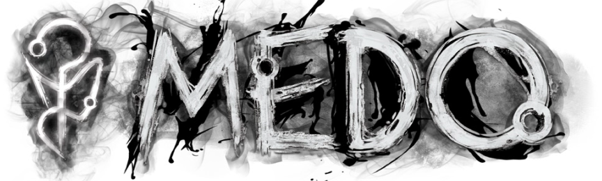

O MEDO É INFINITO
O Medo é o elemento mais misterioso do Outro Lado e não pode ser descrito como as outras entidades. Todas as manifestações do Outro Lado dentro da Realidade são invocadas através do Medo.
A manifestação física do Medo em sua forma pura na Realidade parece ser impossível de especificar detalhadamente, mas os raros relatos daqueles que acreditam ter presenciado o Medo o descrevem como uma distorção irreal similar a uma “chama transparente prismática de todas as coisas”, ou até mesmo citando a sua presença como um “vislumbre de Deus”, explicando o sentimento de que seu próprio cérebro parecia censurar as memórias propositalmente, como numa tentativa de se proteger da incapacidade humana de processar um evento impossível, algo como um trauma consciente e vivo.
Apesar disso, acredita-se que a névoa ilógica encontrada em ambientes com a Membrana danificada seja uma das formas sutis de perceber a presença pura do Medo na Realidade, assim como alguém poderia sentir o calor antes de perceber a presença do fogo
Apesar de ser nomeado “Medo” pelos habitantes da Realidade graças à associação com o medo sentido por humanos, que aparenta ser o fator principal das manifestações do Outro Lado, o Medo não parece estar de fato conectado com a percepção dentro da Realidade. Na verdade, talvez o mistério seja o oposto disso.
Talvez o terror inerentemente natural no cérebro de todos os seres vivos seja apenas o reflexo de uma presença deixada pelo próprio Medo dentro da Realidade antes do início de todas as coisas. A concepção de algo assim seria impossível... Mas o Medo é impossível.
O MEDO NÃO POSSUI NENHUMA RELÍQUIA
MARCAS DA REALIDADE
As “Marcas” — entidades que parecem escolher se conectar com pessoas específicas através do Medo — são um grande mistério. Todos os Marcados são livres das “correntes da Realidade” que tecem o destino, e por isso são capazes de alterar até mesmo o próprio Outro Lado. uma mesma marca pode se manifestar em mais de uma pessoa, transendendo o tempo e o espaço, quando esses marcados transendem suas mentes sintonizam no outro lado, até mesmo podendo compartilhar memorias e segredos.
TODAS AS HISTÓRIAS SÃO SOBRE MARCADOS
RITUAIS
Rituais de Medo também estão diretamente envolvidos com a desconsideração das regras do Outro Lado, capaz de feitos aterrorizantes, porem possuem um custo alto a se pagar. Aqueles capazes de se conectar com o Medo e invocá-lo diretamente, denominados “Marcados”, são os seres mais perigosos e poderosos da Realidade.
Ver mais Rituais...CRIATURAS
Algumas criaturas associadas diretamente com o Medo podem transcender as “regras” de seus próprios elementos, e enfrentá-las envolve processos muito mais complexos e minuciosos do que simplesmente combater até serem destruídas. Criaturas de Medo sempre parecem estar associadas com enigmas e mistérios convolutos que podem ser decifrados.
Ver mais Criaturas...O Medo é um elemento impossivel e absoluto
O MEDO NÃO PODE SER OPRIMIDO